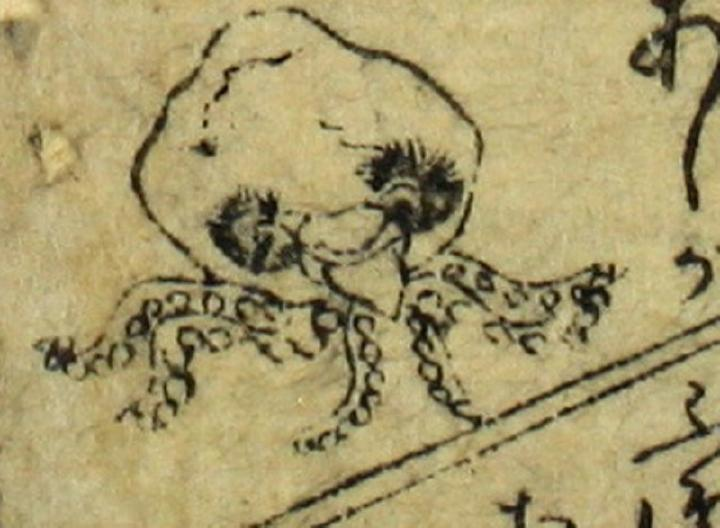

← 图鉴索引

酒席の肴であった蛸。足を数本食べられて歩き難いと嘆いている。
出典：親書誌：U426_nichibunken_0092：化物絵本；バケモノエホン／日付：2005／資源識別子：U426_nichibunken_0092_0003_0003
Copyright (c)2010- International Research Center for Japanese Studies, Kyoto, Japan. All rights reserved.